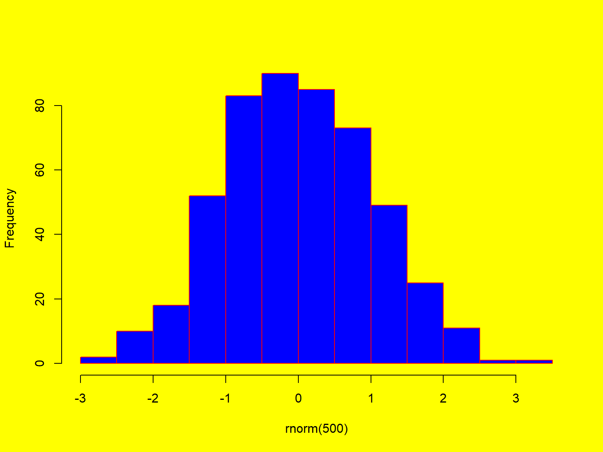
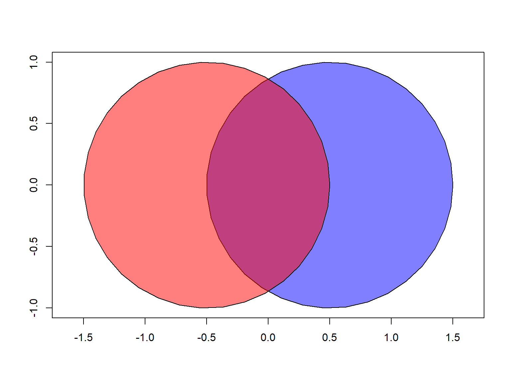
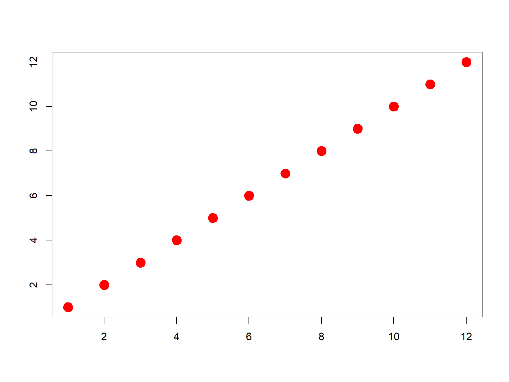
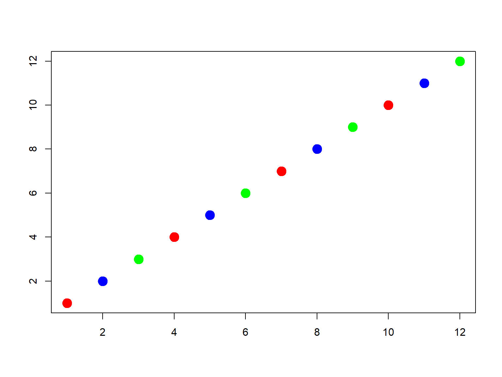
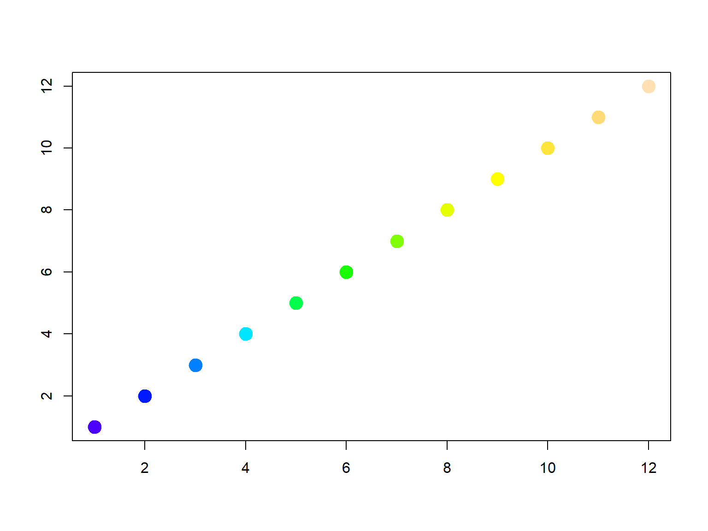
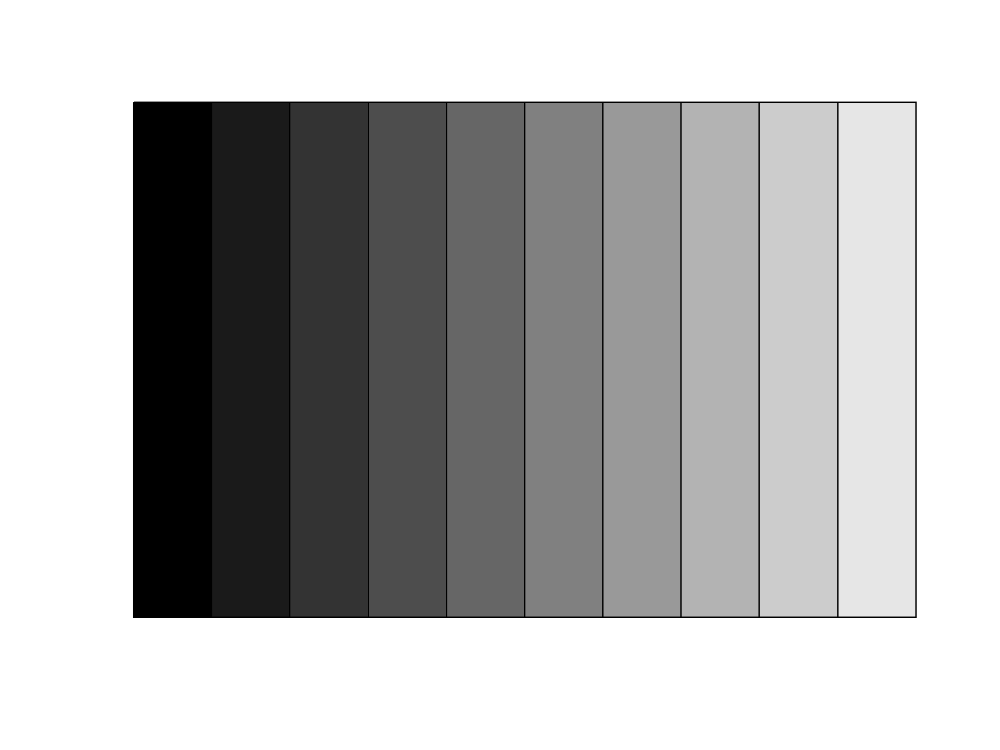
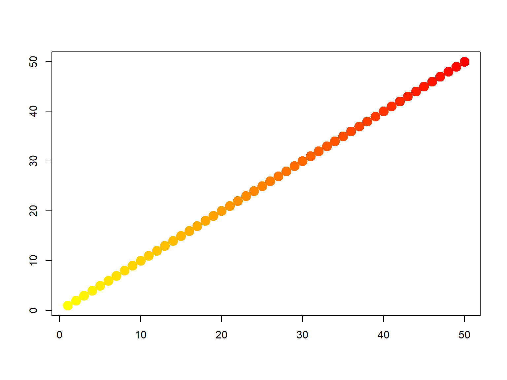
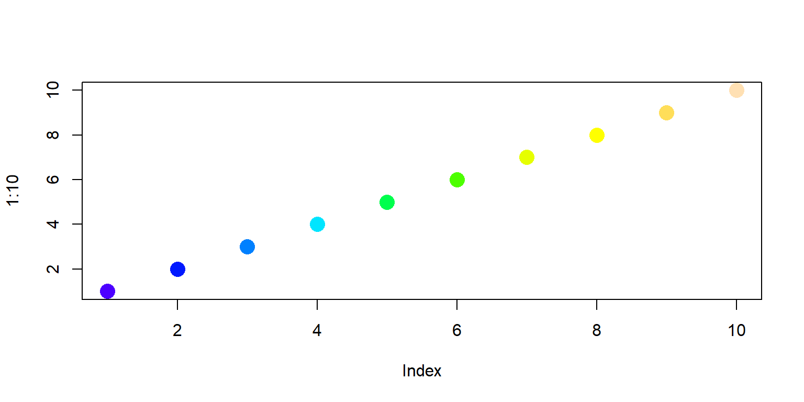

Working with Color
Passing Colors to Plot Functions
Color values are typically used in plot() functions.
par(bg="yellow")
hist(rnorm(500), main=NULL, col="blue", border="red")

Common arguments for colors include:
col: symbol color (for polygons)
border: outline color (for a polygon)
fill: fill color (ggplot)
Specifying Colors
Color values in R can be referred to by:
palette() returns 8 commonly used color names
## [1] "black" "#DF536B" "#61D04F" "#2297E6" "#28E2E5" "#CD0BBC" "#F5C710"
## [8] "gray62"
- a hexadecimal value (e.g., '#6c134b')
Hexadecimal values should be entered as text, including the ‘#’,
e.g., “#00A949”
Custom Colors
Several functions help you make custom colors using intuitive color models, like the red-green-blue or
hue-saturation-value models. Custom color functions are
generally vectorized, so if the arguments passed are vectors it will
return a vector of color values of the same length.
Challenge: How would you make 50% gray?
Solution
## [1] "#808080"
Transparency
To make a fill, outline, or background transparent, set the color to
NA.
R also supports semi-transparent colors. Look for an
alpha argument in color functions, or append a 0-255 alpha
value at the end of a hexidecimal code (where 0 = opaque, 255 =
completely transparent).
To convert an integer to a hexadecimal code, use
as.hexmode()
Transparency Example
### Transparency Example ----------------------
# Create points for a circle
theta <- seq(from=0, to=2*pi, length.out=36)
xs <- cos(theta)
ys <- sin(theta)
# Create an empty plot
plot(NULL, xlim=c(-1,1), ylim=c(-1,1), xlab=NA, ylab=NA, asp=1)
# Plot two overlapping circles each of which is 50% transparent
blue_semitrans <- "#0000ff80"
red_semitrans <- "#ff000080"
polygon(x=xs + 0.5, y=ys, col=blue_semitrans)
polygon(x=xs - 0.5, y=ys, col=red_semitrans)

Modify the code above, using different transparency values (i.e.,
change the last two characters of the color values).
Not all graphic file formats preserve transparency (e.g., JPG).
How Many Color Values Should I Pass?
If you pass one value, all objects in the plot will have the same
color.
## Twelve points, one color
plot(x=1:12, pch=20, cex=3, xlab="", ylab="", col="red")

If you pass multiple color values, the colors will be
repeated as needed until there is one color for each
feature.
## Twelve points, three colors
plot(x=1:12, pch=20, cex=3, xlab="", ylab="", col=c("red", "blue", "green"))

If you want each feature to have a different color, pass the
same number of color values as objects in the plot.
## Twelve points, twelve colors
plot(x=1:12, pch=20, cex=3, xlab="", ylab="", col=topo.colors(12))

Color Palettes and Color Ramps
Usually, you can also pass a vector of color values, which R
will use to color features separately (repeating the color values as
needed). R has several built-in functions that return vectors of colors.
Color palettes where there color blend into each other are known as
Color Ramps.
rainbow(n)
heat.colors(n)
terrain.colors(n)
topo.colors(n)
Most of these functions take a numeric argument n for the
number of color values to return.
### Plot with terrain colors
par(mar=rep(0,4))
barplot(height=rep(1,20), col=terrain.colors(20), axes=FALSE, space=0)

Challenge 1: Replicate the bar plot above with a
different color palette.
Solution
# 1. Replicate the bar plot above with a different color palette.
barplot(height=rep(1,20), col=cm.colors(20), axes=FALSE, space=0)

Challenge 2: Create a vector of 10 gray values, from
pure black to pure white.
Solution
# 2. Create a vector of 10 gray values, from pure black to pure white.
barplot(height=rep(1,10), col=gray(0:10/10), axes=FALSE, space=0)

Custom Color Ramps
You can make a custom color ramp using
colorRampPalette(). Something unusual about this and other
color ramp functions is that it returns a function. For
example,
yellows_to_reds <- colorRampPalette(c("#FFFF00","#FF0000"))
yellows_to_reds(5)
## [1] "#FFFF00" "#FFBF00" "#FF7F00" "#FF3F00" "#FF0000"
plot(x=1:50, pch=20, cex=3, xlab="", ylab="", col=yellows_to_reds(50))

Make a color ramp of your own choice and use it to plot circles. See
example below.
## Plot using a color ramp
plot(1:10, pch=16, cex=2, col=topo.colors(10))

Palettes for Qualitative / Categorical Data
RColorBrewer has eight color palettes designed for categorical or
qualitative data. These palettes have 8-12 colors each. For example the
‘Paired’ palette looks like:
colors_qual_paired <- RColorBrewer::brewer.pal(8, "Paired")
par(mar=rep(0,4))
barplot(height=rep(1,8), col=colors_qual_paired, axes=FALSE, space=0)

The following expression returns a vector of 433 colors excluding
shades of gray. You can draw a random sample from this list with
sample() to get a palette for categorical data.
many_colors <- grDevices::colors()[grep('gr(a|e)y', grDevices::colors(), invert = T)]
You can also get more than a dozen qualitative colors using
tmaptools::get_brewer_pal()
Other Packages for Colors and Plotting
Packages that provide additional color palettes and ramps: